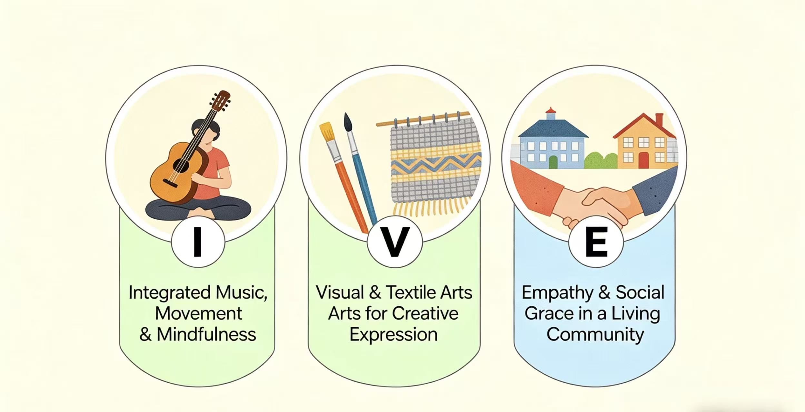
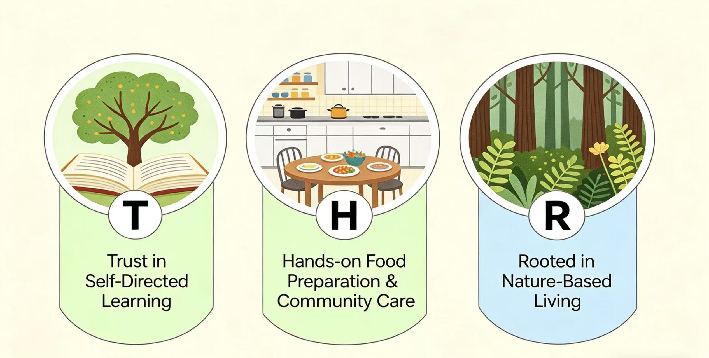

At the heart of our program is authentic Montessori practice, where children are trusted as capable, self-motivated learners. Through uninterrupted work cycles and meaningful choice, they develop concentration, independence, and a deep sense of self.
Food is a powerful connector in our environment. Children wash, slice, bake, stir-fry, and prepare food together, building coordination, patience, gratitude, and meaningful social bonds through shared community experiences.
Our living environment includes gardens, fruit trees, flowers, and small animals. Children plant, harvest, and care for life throughout the seasons, developing responsibility, environmental awareness, and a grounded sense of belonging.
Live piano music, rhythm play, yoga, dance, and storytelling are woven into the daily rhythm of school. These experiences support coordination, emotional regulation, imagination, and joyful self-expression.
Children explore purposeful artistic work through weaving, sewing, beading, design, and hands-on visual art. These processes build patience, precision, problem-solving, and pride in craftsmanship.
In our mixed-age, collaborative environment, children practice kindness, patience, cooperation, and communication every day. These lived experiences shape not only how they learn, but also who they become.